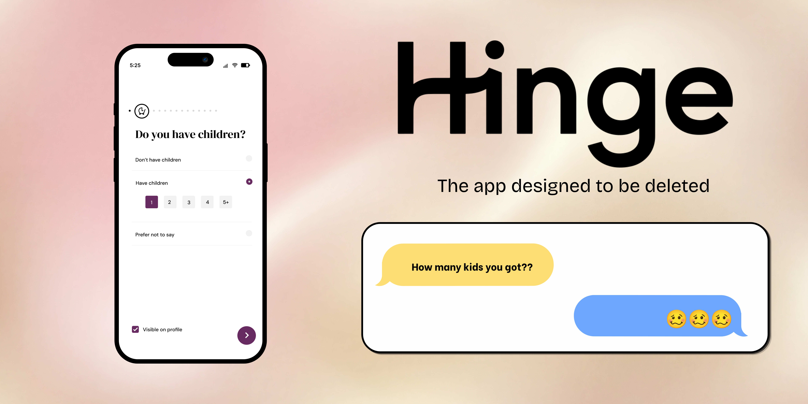
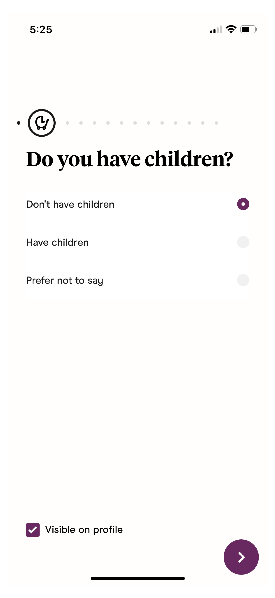
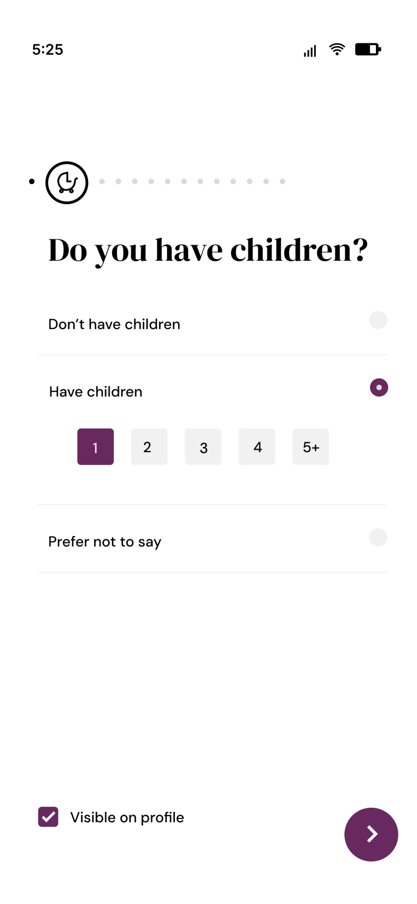
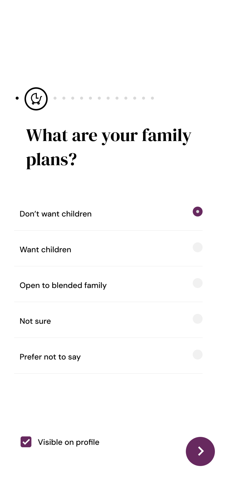

Feature design · UX research
Better matches start with better context.

Hinge is a relationship-focused dating app designed to move beyond endless swiping. Instead of relying solely on photos, users build profiles through prompts, preferences, and personal details that help communicate values, lifestyle choices, and long-term intentions.
Those structured inputs shape who users are shown to and help establish compatibility before a conversation ever starts.
The current Family Planning section reduces parenthood to a handful of broad choices: whether you have children and whether you're open to having them. In reality, family dynamics are much more nuanced.
Having one child versus four, wanting more children versus being open to dating someone who already has them, or specifically looking for another single parent all communicate very different lifestyles and relationship goals.
By flattening those experiences into a few generic options, Hinge makes it harder for users to accurately represent themselves, often leading to mismatched expectations, awkward conversations, and wasted time.
While the idea started from my own experience using Hinge, it quickly became clear that I wasn't the only person interpreting these prompts differently.
Through conversations with other single parents and discussions on Threads, I found the same questions coming up repeatedly:
"Hinge needs to change the kid option from 'Have Children' to 'Have child'. The number of kids matters for some!"
One former Hinge employee even shared that adding an option for dating someone with children had previously been suggested internally, reinforcing that this ambiguity isn't unique to a single user experience.
These conversations highlighted the same underlying problem: Hinge's Family Planning section compresses complex family dynamics into broad labels, leaving too much room for interpretation during a process where clarity matters most.
The goal wasn't to redesign Hinge's onboarding experience or ask users to complete a lengthy questionnaire.
Any solution needed to:
The biggest challenge was deciding how to ask for the information I needed without causing friction.
Hinge's current option, "Open to children," combines multiple intentions into a single answer. It could mean someone wants children of their own, is open to dating a parent, or both. During the design process, I revisited the wording several times, aiming for language that felt more specific without adding additional questions or increasing complexity.
I ultimately landed on "Open to blended family." The phrase more clearly communicates openness to dating someone with children while preserving the simplicity of Hinge's existing onboarding flow. The goal wasn't to collect more information, but to help users communicate the information that already matters more accurately.
I redesigned the Family Planning module with two focused improvements.
Number of children
Instead of a simple yes/no response, users can indicate how many children they have, giving potential matches a more accurate snapshot of their situation without requiring additional explanation.
Open to blended family
Replacing the generic "Open to children" option with "Open to blended family" allows both single parents and childless users to communicate whether they're open to dating someone with children.
If expanded further, these same inputs could also power search filters, allowing users to filter matches based on family structure and reducing unnecessary conversations before they begin.

The existing experience asks whether a user has children but provides no additional context, making very different family situations appear the same.

Selecting Have children reveals the number of children, surfacing relevant context only when needed and keeping the default experience lightweight.

Replacing Open to children with Open to blended family reduces ambiguity and better communicates relationship intent.
This project reinforced how much influence language has on the user experience. Hinge already collects information about family planning, but broad labels like "Have children" and "Open to children" leave too much room for interpretation during a decision-making process where clarity matters.
Rather than adding more questions or redesigning the entire onboarding flow, I focused on making existing inputs more intentional. Small changes in wording can dramatically change how users understand a product and, in this case, help people represent themselves more accurately.
If I were to continue exploring this concept, I would validate the proposed language through usability testing and compare how users interpret "Open to children" versus "Open to blended family." While the distinction may seem subtle, reducing ambiguity at the profile level has the potential to create more compatible matches and fewer conversations built on mismatched expectations.